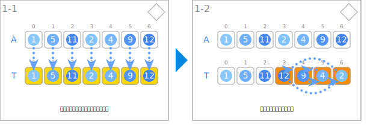
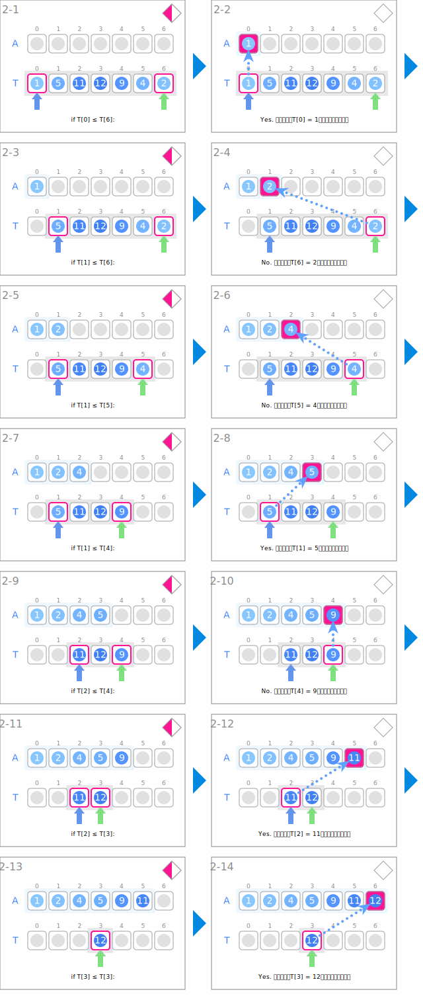
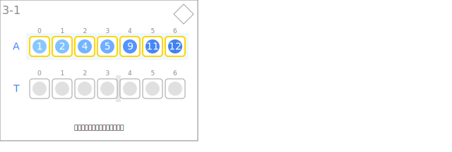

シンボル
| データ | ||
|---|---|---|
 | 整数の列 | A |
| 一時的に退避した整数の列 | T | |
| 入力とデータの退避 | ||
|---|---|---|
 | 入力データを退避します。 | |
 | 後半をリバースします。 | |
| マージ | ||
 | どちらのグループの先頭が小さいか調べます。 | if T[i] ≤ T[j]: |
 | 選択された要素を戻します。 | A[k] ← T[?] |
 | 前半部分の現在置を指します。 | i |
| 後半部分の現在置を指します。 | j | |
 | ソート済みの部分を拡張していきます。 | 区間[l, k] |
| 出力 | ||
 | 整列された整数の列を出力します。 | |
アニメーション
入力とデータの退避

マージ

出力
